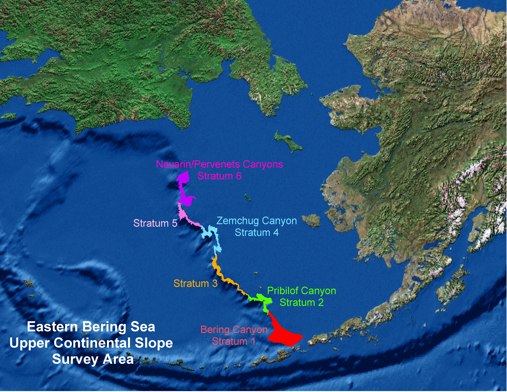
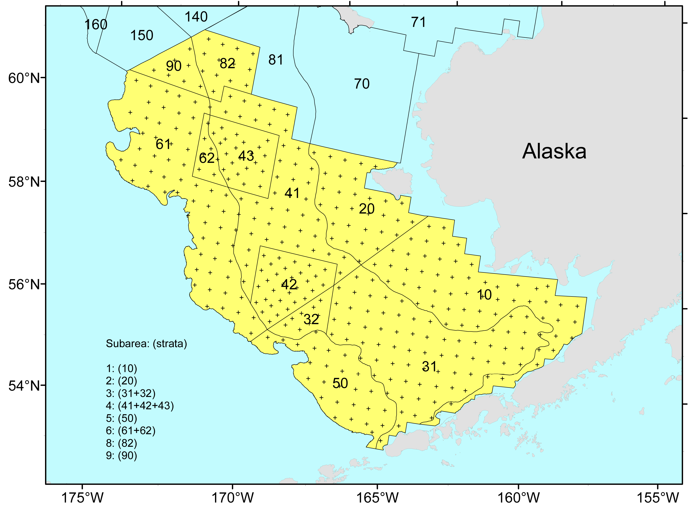

Chapter 3 Data
3.1 Getting access
This section was pretty much put together by Jordan Watson, thanks Jordan!!
There are two databases in particular that you’ll want access to. “AFSC” and “AKFIN”. AKFIN is the Alaska Fisheries Information Network (our version of ACCSP). These are both Oracle databases but require different logins and different network connections. To get an AFSC account, your supervisor will need to submit a helpdesk request. To get an AKFIN account, you will need to contact Bob Ryznar at Pacific States Marine Fisheries Commission (RRyznar@psmfc.org). With Bob, specify that you’d like access via both Answers (online GUI) and SQL (it’s two different accounts).
Before getting your accounts, you will need to get on the “signer’s list” which gives you access to confidential data. Sign both the federal and state ones which will give you full access to most things in AKFIN (including fish tickets). Contact Obren Davis at the AKRO to get the paperwork. This will not give you access to VMS data. That’s a separate process.
CRITICAL: If you mess up your password in the AFSC database 3 times, your account is locked and you need the admin to reset you. Seriously.
It’s a pain.
You have to change your password every three months. Easy to change in sql developer.
Recommended: have IT load SQLDeveloper on computer.
todo: add examples of changing in sql developer
You will need to have IT install the Oracle odbc driver.
Take the code chunks below (AFSC and AKFIN) and copy and paste them into a blank text document and save that document as tnsnames.ora.
Give this .ora file to the IT person when they are setting up your account.
afsc =
(DESCRIPTION =
(ADDRESS = (PROTOCOL = TCP)(HOST = raja.afsc.noaa.gov)(PORT = 1521))
(CONNECT_DATA =
(SERVER = DEDICATED)
(SERVICE_NAME = afscp1)
)
)
akfin =
(DESCRIPTION =
(ADDRESS = (PROTOCOL = TCP)(HOST = akfindb.psmfc.org)(PORT = 2045))
(CONNECT_DATA =
(SERVER = DEDICATED)
(SERVICE_NAME = akfin.psmfc.org)
)
)Some simple terminology for when you are communicating with the AKFIN folks. “AKFIN” is the database. The schema is essentially like a folder and inside of it are all the tables.
3.2 Passwords
Your AFSC database password expires every 90 days. Fortunately it is easy to update using Oracle SQL Developer.
Step 1. Open Oracle SQL Developer
Step 2. Right click the AFSC connection, then click on “Reset Password”.

3.3 Confidentiality
Some data we just aren’t permitted to share…
3.3.1 Handling confidential data on GitHub
3.3.1.2 Local commit but not yet pushed to GitHUb
In this scenario you have accidentally committed the wrong files to Git, but haven’t pushed the commit to GitHub. There are several ways to “undo” a series of commits. The method you choose depends upon the desired outcome:
- Undo commit and keep all files staged:
git reset --soft HEAD^ - Undo commit and unstage all files:
git reset HEAD^- Undo last 3 commits and unstage all files:
git reset HEAD~3
- Undo last 3 commits and unstage all files:
- Undo the commit and completely remove all changes:
git reset --hard HEAD^
Generally speaking you will want to use git reset HEAD^.

3.5 Groundfish data
3.5.1 Bering Sea
Stratum numbers in the AKFIN tables designate different levels of data grouping. These designations are different for the different surveys (EBS slope vs EBS shelf). Given that these groupings are made at different levels, care should be taken not to sum values over all strata because this can duplicate data.
3.5.1.1 EBS SLOPE STRATUM DESIGNATIONS:
Strata include (1:6, 11:15, 21:25, 31:35, 41:45, 5:55, 61:65, 999999).
For 1-digit “strata”, the digit designates the Canyons ordered 1 - 6 , south to north, as follows:
1 - Bering Canyon2 - Pribilof Canyon3 - Inter Pribilof-Zhemchug4 - Zhemchug Canyon5 - Inter Zhemchug-Pervenets6 - Navarin/Pervenets Canyons
For 2-digit “strata”, the 1st digit designates the slope Canyon as above, and the 2nd digit designates the depth zone grouped into 200 m ranges as follows:
2nd digit:
200-400 mdepth zone400-600 mdepth zone600-800 mdepth zone800-1000 mdepth zone1000-1200 mdepth zone
Thus, for example:
Stratum 1 = Bering Canyon, all depths within that Canyon
Stratum 2 = Pribilof Canyon, all depths within that Canyon
Stratum 11 = Bering Canyon at depths of 200-400 m
Stratum 65 = Navarin/Pervenets Canyons at depths of 1000-1200 m
Finally, there is a combined overall Stratum designation:
999999 = all Canyons over all depth zones
Thus, biomass for stratum=999999 is the same as the sum of biomass for strata 1+2+3+4+5+6, or the sum of biomass for strata (11+12+13+14+15+21+22+23+24+25+31+32+33+34+35+41+42+43+44+45+51+52+53+54+55+61+62+63+64+65).

3.5.1.2 EBS SHELF STRATUM DESIGNATIONS:
Strata include (1:10, 20, 31, 32, 41:43, 50, 61, 62, 82, 90, 100, 200, 300, 999).
Please refer to the stratum map for location of strata.
Strata 10, 20, 31, 32, 41, 42, 43, 50, 61, 62, 82, 90 are the core strata within which biomass and population are computed.
The other strata (1:9, 100, 200, 300, 999) are various summations of the core strata, as follows:
102031+3241+42+435061+628290
100 = depth zone <50 m (=strata 1+2; or 10+20)
200 = depth zone 50-100 m (=strata 3+4+8; or 31+32+41+42+43+82)
300 = depth zone 100-200 m (=strata 5+6+9; or 50+61+90)
999 = overall combined (all strata = 1+2+3+4+5+6+8+9; or 10+20+31+32+41+42+43+50+61+62+82+90)
